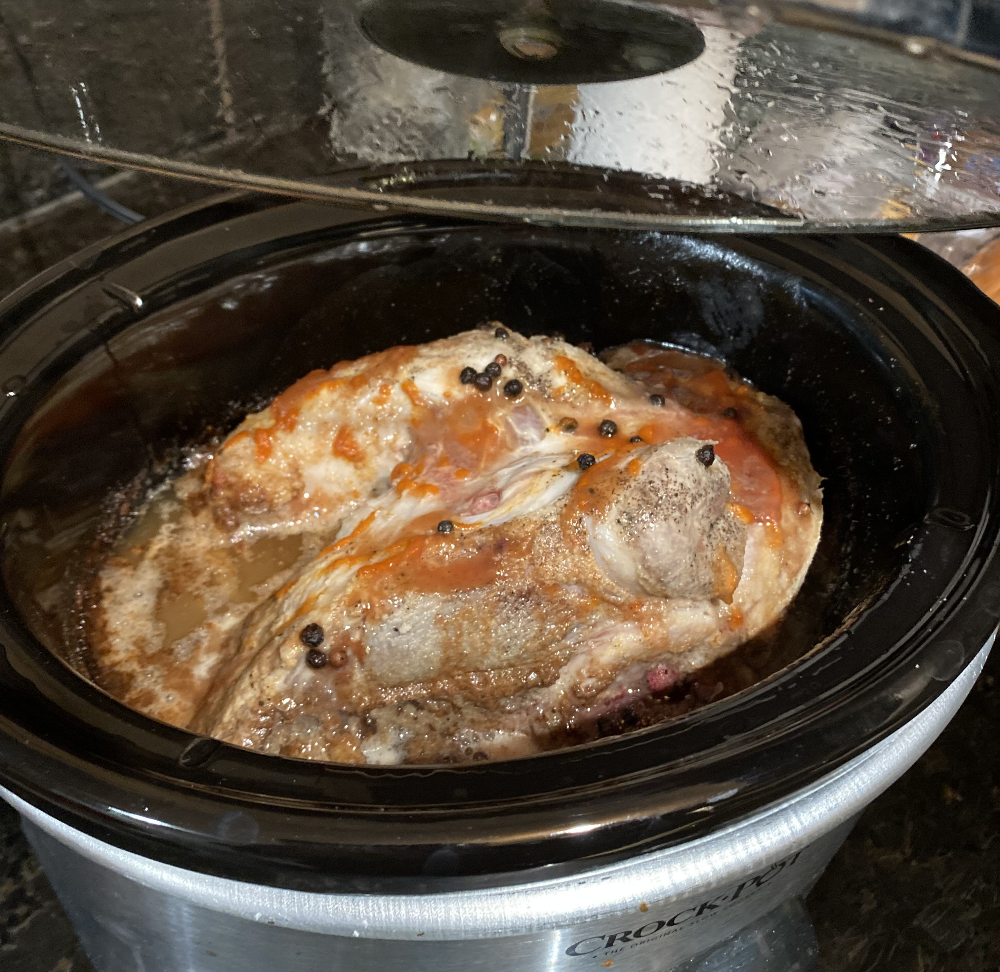

Pulled Pork

Description
One time my friend Tayler had a party and made pulled pork
for everyone. It was so good that the next day I asked him if
he could send me the recipe. This is what he sent..
prep time- 5 minutes
cook time- 4 hours
total time- 4 hours 5 minutes
servings- 8 servings
Ingredients
- 1 pork shoulder roast 4-5 pounds
- salt, pepper and garlic powder
- 1 onion sliced
- 1 can Dr. Pepper
- 3/4 cup barbecue sauce
- Rolls & coleslaw for serving
Steps
- Place the onnion in the bottom of the slow cooker. Rub the outside of the roast with salt, pepper and garlic powder.
- Pour the Dr. Pepper over the pork and cook on high 4-5 hours or on low for 7-8 hours.
- The meat will be mega tender. Using 2 forks, shred the pork and place back in the juices.
- Add barbecue sauce to taste. Allow to cook an additional 30-60 minutes if desired.
- Serve on crusty rolls with coleslaw.
This will be one of the best bulled bourques you've ever put upon your mouth. Enjoy!
Return to main page